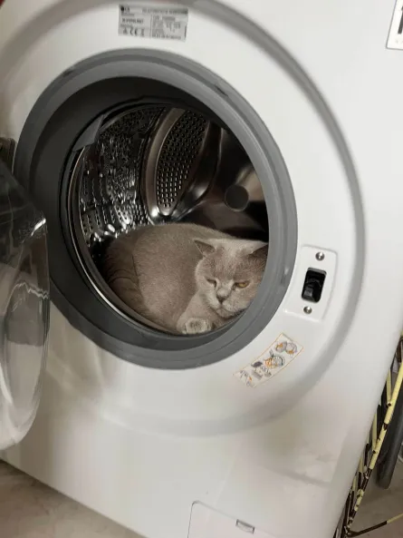

My name is Kai, I am 18 years old and live in a village in Zeeland called Rilland. Before studying at HZ, I completed my
MAVO and HAVO at RSG't Rijks. While studying at RSG't Rijks, I worked at a supermarket for two and a half years.
Outside of studying, I really enjoy going to the gym, gaming, and playing chess. I also like doing sports with friends like
padel or football as well as basketball. I also enjoy just hanging out with friends or reading a book when I'm bored
while hanging out with my cats, of course.
github
hobby list:
Gaming
Reading
Gyming
chessing